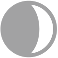

Kenosha, WI 42.61,-87.88
Sun  06:13:34 06:13:34  19:31:08 19:31:08Cloudy | |
| Ceiling (m) | 11000 Cloudy |
| 1/6/24h (mm) 1/6/24h (cm) | 1.02/4.32/4.57 / / |
| Altimeter (hPa) Mean SL (hPa) | 999.32 -1.02 1001.20 |
| Change 24h (℃) Dew Point (℃) Feels Like (℃) Heat Index (℃) Max/Min 24h (℃) Max >7am (℃) Wind Chill (℃) | 4 15 17 17 21/12 19 17 |
| UV (Idx) | |
| Air Quality (Idx) NO2/O3/SO2 (Idx) PM2.5/10/CO (Idx) | 53 6 53 |
| Visibility (Km) | 14.48 |
| Dir (Gusts) (Km/h) | 14 |
| Pollen | |||
|---|---|---|---|
| 4/13 07 | |||
| 4/13 19 | |||
| 4/14 07 | |||
| 4/14 19 | |||
| 4/15 07 | |||
| 4/15 19 | |||
| 4/16 07 | |||
| 4/16 19 | |||
| 4/17 07 | |||
| 4/17 19 | |||
| 4/18 07 | |||
| 4/18 19 | |||
| 4/19 07 | |||
| 4/19 19 | |||
| Moon | Phase | Age | AgePh |
| 4/16 13:57 | 14.5 | 15 | |
| 4/23 06:58 | 21.9 | 22 | |
| 4/30 15:30 | 29.3 | 0 | |
| 5/8 19:22 |  | 7.2 | 7 |